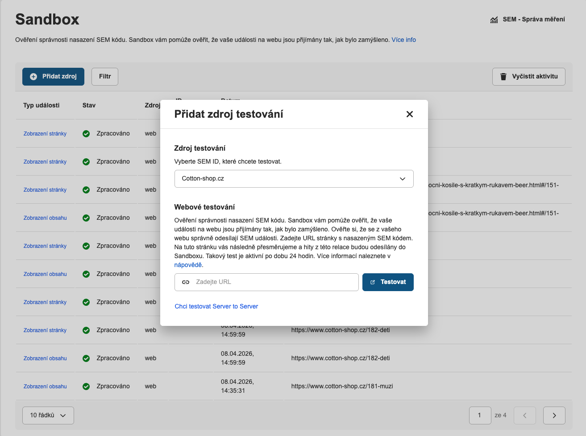

Testování (Sandbox)
Sandbox je testovací nástroj ve Správě měření, který vám umožní ověřit správnost nasazení SEM kódu ještě před ostrým provozem – bez ovlivnění reálných dat.
Co je Sandbox
Po spuštění testu vás Sandbox přesměruje na váš web a začne zachytávat SEM události odesílané z dané relace. Na webu pak můžete simulovat jednotlivé akce – zobrazení produktu, přidání do košíku, dokončení objednávky – a v reálném čase sledovat, zda jsou události správně odesílány a zda obsahují očekávané parametry.
Události zachycené během testu v Sandboxu nejsou započítávány do reálných dat Sklik účtu. Nedochází tak ke zkreslení konverzí, retargetingových publik ani statistik kampaní.
Jak spustit test
-
Otevřete Sandbox ve Správě měření
Přejděte přímo do Sandboxu ve Správě měření.
-
Přidejte zdroj testování
Klikněte na Přidat zdroj, vyberte SEM ID, které chcete testovat, a zadejte URL stránky s nasazeným SEM kódem.

-
Spusťte test a simulujte události
Po kliknutí na Testovat vás Sandbox přesměruje na zadanou URL. Na webu proveďte akce, které chcete ověřit – procházení produktů, přidání do košíku, objednávku. Události se budou v reálném čase zobrazovat v Sandboxu.
-
Zkontrolujte zachycené události
V tabulce Sandboxu uvidíte typ události, její stav (Zpracováno / chyba) a zdrojovou URL. Kliknutím na řádek zobrazíte detailní parametry události a ověříte, zda odpovídají očekávaným hodnotám.
Testovací relace vyprší automaticky po 24 hodinách od spuštění. Po skončení testu se události opět odesílají standardně do ostrého měření.
Testování S2S měření
Pokud implementujete Server-to-Server (S2S) měření, Sandbox funguje
odlišně – prohlížeč nepřesměrovává. Token zkopírujete ze Správy měření a předáte ho
přímo v S2S payloadu jako parametr sandbox.
-
Zkopírujte sandbox token
Přejděte do Sandboxu ve Správě měření a zkopírujte vygenerovaný token. Token je platný 24 hodin.
-
Přidejte token do S2S payloadu
Token předejte jako top-level parametr
sandboxv těle požadavku. Ostatní parametry zůstávají stejné jako při ostrém měření.JSON – S2S hit se sandbox tokenem{ "schema_version": "v2", "sandbox": "vas-testovaci-token-123", "event_name": "Purchase", "event_type": "rtgconv", "event_time": 1712745193000, "event_data": { "sem_id": "abc123def456ghi789jkl012", "order_id": "OBJ-2024-001", "value": 1500.0, "currency": "CZK" } } -
Zkontrolujte zachycené události v Sandboxu
Odeslané hity se zobrazí v tabulce Sandboxu stejně jako při frontendovém testování. Kliknutím na řádek ověříte detailní parametry.
Testing (Sandbox)
Sandbox is a testing tool in Event Management that lets you verify your SEM implementation is working correctly before going live – without affecting real data.
What is Sandbox
Once you start a test, Sandbox redirects you to your website and begins capturing SEM events sent during that session. You can then simulate individual actions on the site – viewing a product, adding to cart, completing an order – and see in real time whether events are being sent correctly and contain the expected parameters.
Events captured during a Sandbox test are not counted toward your real Sklik account data. They will not skew your conversions, retargeting audiences, or campaign statistics.
How to run a test
-
Open Sandbox in Event Management
Go directly to Sandbox in Event Management.
-
Add a test source
Click Add source, select the SEM ID you want to test, and enter the URL of the page with SEM code deployed.
-
Start the test and simulate events
After clicking Test, Sandbox redirects you to the specified URL. Perform the actions you want to verify on the website – browsing products, adding to cart, placing an order. Events will appear in Sandbox in real time.
-
Review the captured events
The Sandbox table shows the event type, its status (Processed / error), and the source URL. Click a row to view detailed event parameters and verify they match the expected values.
The test session expires automatically 24 hours after it starts. Once the test ends, events are sent normally to live measurement again.
Testing S2S measurement
If you implement Server-to-Server (S2S) measurement, Sandbox works
differently – there is no browser redirect. You copy the token from Event Management and pass it
directly in the S2S payload as the sandbox parameter.
-
Copy the sandbox token
Go to Sandbox in Event Management and copy the generated token. The token is valid for 24 hours.
-
Add the token to the S2S payload
Pass the token as a top-level
sandboxparameter in the request body. All other parameters remain the same as in live measurement.JSON – S2S hit with sandbox token{ "schema_version": "v2", "sandbox": "your-test-token-123", "event_name": "Purchase", "event_type": "rtgconv", "event_time": 1712745193000, "event_data": { "sem_id": "abc123def456ghi789jkl012", "order_id": "OBJ-2024-001", "value": 1500.0, "currency": "CZK" } } -
Review the captured events in Sandbox
Submitted hits appear in the Sandbox table just like during frontend testing. Click a row to verify the detailed parameters.